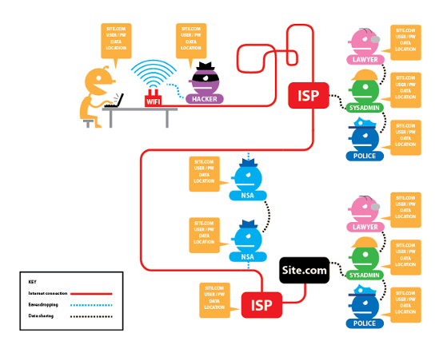

Online Privacy using
GPG, TOR, and Tails
Created by Amber Adams / @amberadams aka @anarchival
Right to Privacy
The NSA
The Law
Law Enforcement
Coders are the new Communists?
Heart Bleed

The Heartbleed bug is a programming
error in the OpenSSL library which
undergirds most of the
encrypted traffic on the Internet.
(speaking of encrypted traffic,
even once the bug is fixed,
you should be using
from the EFF).
Targeting Pregnancy
They know you're pregnant,
Maybe even before your family does.
(you should install Privacy Badger from the EFF).
Criminals
Creeps can use your own computer
to stalk you often with terrible consequences.
hack or be hacked
SOLUTIONS
The Onion Router
Traffic Analysis
Sherlock Holmes reveals your IP, specs on your system
easy to find your location based on your IP
before even analysing the content of your unencrypted messages
Proxies & Encryption
Installation & Use
Download and install the package.
Start the TOR browser, click Connect.
Use *only* the TOR browser
Use HTTPS (enabled by default)
Use bridges and/or find company
Don't torrent
Don't enable or install browser plugins
Don't open documents through TOR while online
Hidden Services
Explore the Deep, Dark, Mysterious Net.
Host your own hidden services on a virtual machine.
Host your own torrents while you're at it, too.
THE COMMAND LINE
The Terminal
Mac: Finder -> Applications -> Utilities -> Terminal
Linux: Browse to your Terminal application
(you probably already know where it is)
Windows: Install and use Cygwin
or partition your hard drive and dual boot to Linux
Linux Installfest @ PhreakNIC, Halloween weekend at the Maxwell House Hotel in Nashville.

Learning to Love the CLI
A short introduction on the Web.
The man(ual) pages.
In the Beginning Was the Command Line by Neal Stephenson.

GNUPG

Installation & Use
Mac: GPG Tools
Windows: GPG4Win
Linux:
gpg --version
sudo apt-get install gnupg
Create Your Keys
gpg --gen-key
Add Accounts to Your Key
--edit-key 12345678
adduid
Exporting Your Public Key
gpg --armor --output mykeyname.asc --export
Import a Trusted Key
gpg --import pubkeyfile.asc
importing from keyservers
gpg --keyserver http://www.KeyServerUrl.com --keyserver-options honor-http-proxy --search-keys Email@Address.com
Move Your Keys
user@desktop$ cp -r ~/.gnupg /media/jumpdrive/
user@laptop$ cp -r /media/jumpdrive/.gnupg ~/
Encrypting Local Files
gpg --encrypt commies.list > commies.list.gpg
gpg --decrypt pink.list > pink.list
Mail Clients
Enigmail plugin for Thunderbird
Evolution Mail: Edit -> Preferences -> Accounts -> Security Tab -> Key ID
Revoking a Key
gpg --output revoke.asc --gen-revoke 12345678
OTR
Off The Record Messaging
Encryption
No one else can read your instant messages.
Authentication
You are assured the correspondent is who you think it is.
Deniability
The messages you send do not have digital signatures that are checkable by a third party.
Perfect forward secrecy
If you lose control of your private keys, no previous conversation is compromised.
Installation & Use
Install Pidgin.
Install OTR.
sudo apt-get install pidgin
sudo apt-get install pidgin-otr
Enable OTR plugin & generate key.
Manage permissions.
Tails
TOR
All software is configured to connect to the Internet through Tor. If an application tries to connect to the Internet directly, the connection is automatically blocked.
Use Anywhere, Leave No Trace
"Amnesic" because the only storage space it uses is the RAM on your computer, which is automatically erased when the computer shuts down.
Cryptographic Tools
LUKS, Linux standard for disk encryption
HTTPS Everywhere
encrypt and sign emails, documents with OpenPGP
protect IMs with OTR
securely delete files with Nautilus Wipe
Installation & Use
Download the Tails ISO using bittorrent
Download and verify the Tails signing key.
Burn the ISO image to a disc.
Boot your computer from the disc.